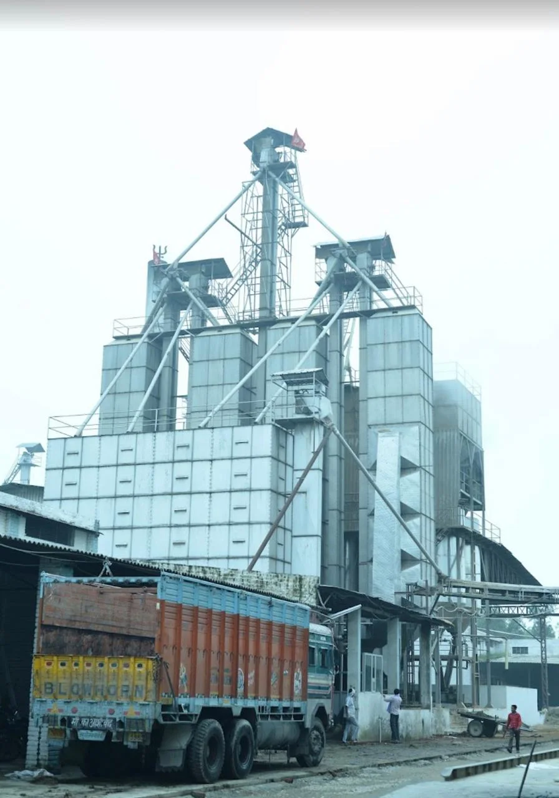

Prepare
Paddy procurement, drying, warehousing, pre-cleaning, de-stoning and grading.
The mill behind the offer
UrbanFresh Rice Mills operates from Village Daha, Madanpur, Karnal. The business was established in 1978 and handles paddy preparation, rice processing, sorting and packing.

International buyers need to know who will review the order, where the rice is processed and which production steps are handled at the mill. These first-party photographs show the site behind the UrbanFresh brand.
Processing flow
Paddy procurement, drying, warehousing, pre-cleaning, de-stoning and grading.
Parboiling where applicable, mechanised drying, de-husking, milling and polishing.
Sorting, separation, magnets, accepted packing and shipment coordination.
Mill-side verification
Ask for current company records, mill photographs, the proposed product specification, sample arrangements, applicable test evidence and packing details. Document validity and scope should be checked for the legal operating entity and intended market.

Send the rice, specification, volume, packing, destination and shipment window in one RFQ.